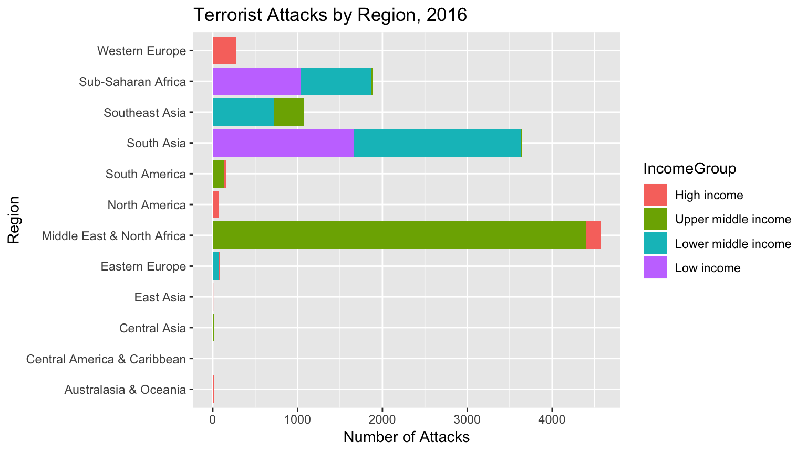
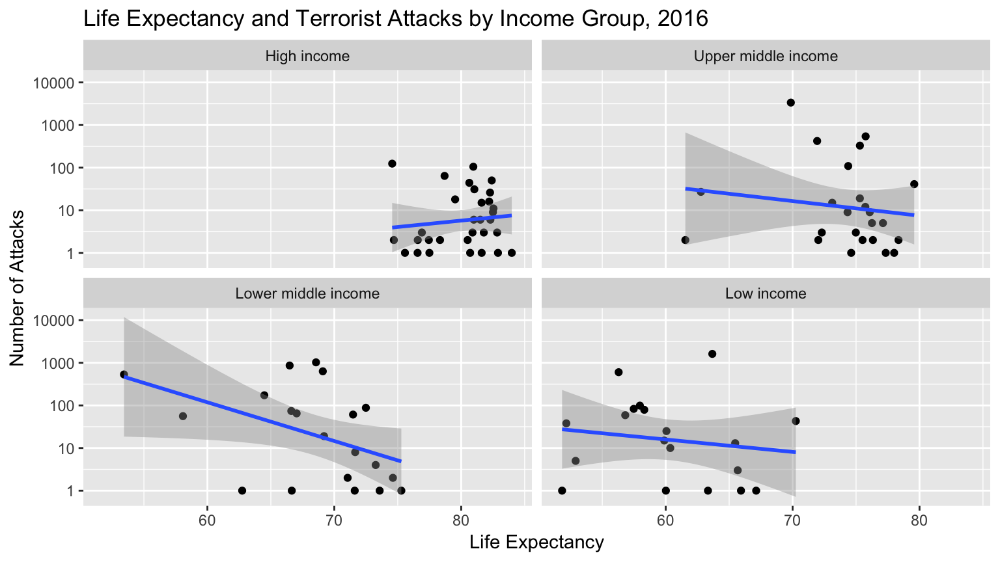

This barplot gives us a better sense of the relationship between number of terrorist attacks, region, and income group. The Middle East & North Africa appears to have had the highest rate of terrorist attacks in 2016, followed by South Asia and Sub-Saharan Africa. A notable difference between the distribution of terrorist attacks across income groups in these regions is that in Sub-Saharan Africa and South Asia, the majority of terrorist attacks took place in low or lower middle income countries, whereas in the Middle East & North Africa, all attacks took place in high or upper middle income countries. The comparatively high rate of terrorist attacks in the Middle East & North Africa region, relative to other predominantly high and upper middle income regions, can be explained by the presence of terrorist groups and political conflict in wealthy oil-producing countries such as Iraq, Turkey, and Saudi Arabia.
Due to the myriad of factors that influence a country’s rate of terrorist attacks, there is no clear, direct correlation between income group and number of terrorist attacks. Some regions with high rates of terrorist attacks tend to be poorer–this is unsurprising given that poorer countries are more vulnerable to political instability. However, some high and upper middle income countries outside of the Middle East & North Africa have noticeable rates of terrorist attacks as well. Although the number of attacks in high income regions such as Western Europe and North America is far lower than that in lower income regions, it is notably higher than that in other developed regions such as East Asia and Australasia & Oceania. There is no singular explanation for these higher rates, although a possible reason is conflict associated with refugee and immigration policies and right-wing extremism. Finally, it is important to note that terrorist attacks are not limited to Islamist extremism–they are perpetrated by a wide range of extremist political groups and individuals with varying motives.

In this scatterplot, we examine the relationship between a country’s life expectancy and number of terrorist attacks, faceted by income group. As expected, average life expectancy tends to be higher in wealthier countries and lower in poorer countries. In each income group except for high income countries, there is a negative association between life expectancy and number of terrorist attacks. This means that as the average life expectancy of a country increases, the number of terrorist attacks decreases. This could be explained, in part, by the fact that less developed countries with lower life expectancies are more susceptible to political instability, or that countries with worse economic and political conditions naturally have lower average life expectancies. However, it is important to acknowledge that the negative association is quite low in the upper middle and low income groups, but is more significant in the lower middle income group.
Surprisingly, there is a slight positive association between life expectancy and number of terrorist attacks in high income countries. There is no singular explanation for these results, but when analyzing the data, it appears that the countries in the high income group with the highest number of terrorist attacks are Saudi Arabia, the United Kingdom, and the United States. Saudi Arabia is wealthy because it the largest exporter of petroleum in the world,1 but it is also the site of numerous radical Islamist groups, while the U.K. and U.S. experience terrorist attacks from groups ranging from right-wing extremists to Jihadi-inspired extremists.2
In sum, we find that in many cases, higher life expectancy and country income correlates with fewer terrorist attacks. However, there are several exceptions to this conclusion. This reveals that a country’s rate of terrorist attacks can be attributed a wide range of factors, many of which fall beyond the scope of our data and analysis.
“Saudi Arabia facts and figures.” Organization of the Petroleum Exporting Countries, 2018, https://www.opec.org/opec_web/en/about_us/169.htm.↩
“Terrorism.” FBI, https://www.fbi.gov/investigate/terrorism. Accessed 19 Dec 2018↩